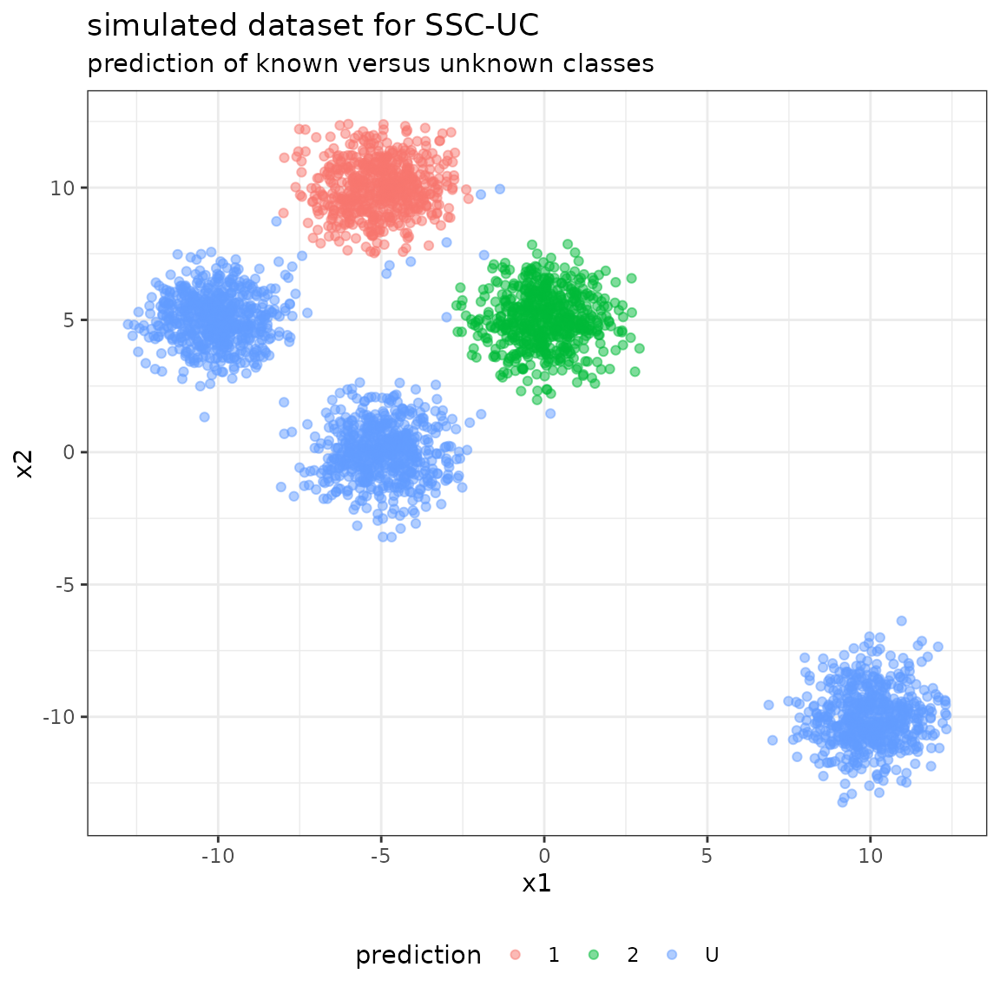

Quickstart
Quickstart.RmdPrepare a sample dataset for Naive Bayes
In the first step, we simulate a dataset with the following specifications:
- a total number of 5 classes, 2 of which are known and 3 are unknown, respectively
- n_labeled = 300 labeled samples, evenly distributed over the 2 known classes
- n_unlabeled = 3000 unlabeled samples, evenly distributed over the 5 classes
- a dimension of n_feats = 2 features (to facilitate representation)
Each class \(i\) is represented by a bivariate Gaussian distribution with mean vector \(\mu = (\mu_1^{(i)}, \mu_2^{(i)})\) and covariance matrix \[\Sigma = \left(\begin{array}{cc}1 & 0 \\ 0 & 1\end{array}\right)\] (identical for all classes). The known classes are 0 and 1.
library(mvtnorm)
set.seed(1)
# sample sizes
n_labeled <- 300
n_unlabeled <- 3000
n_feats <- 2
# mean values and covariance matrices
mu <- rbind(
c(-5, 10),
c(0, 5),
c(-5, 0),
c(-10,5),
c(10,-10)
)
rownames(mu) <- 0:4
sigma <- diag(rep(1,n_feats))
print(mu)
#> [,1] [,2]
#> 0 -5 10
#> 1 0 5
#> 2 -5 0
#> 3 -10 5
#> 4 10 -10
print(sigma)
#> [,1] [,2]
#> [1,] 1 0
#> [2,] 0 1Given the data specifications, we simulate from the bivariate Gaussian distribution to generate the dataset given the class vector. We discriminate between the true class vector y_true containing the labels 0-4 of all samples, and the model input class vector y containing a true label only for the labeled data, and NA, otherwise.
# specify number of labeles / unlabeled samples per class
labeled_classes <- rep(0:1, each = n_labeled / 2)
unlabeled_classes <- rep(0:4, each = n_unlabeled / 5)
num_sample <- c(table(labeled_classes), table(unlabeled_classes))
# simulate X, ytrue and y
X <- c()
for(i in 1:length(num_sample)){
X <- rbind(X, rmvnorm(num_sample[i], mu[names(num_sample)[i],], sigma))
}
X <- cbind(X, 1)
y <- rep(c(1:2, NA), c(table(labeled_classes), length(unlabeled_classes)))
ytrue <- rep(names(num_sample), num_sample)
colnames(X) <- paste0("x", 1:3)
# summaries of the model input class vector y, and the true class vector ytrue
summary(as.factor(y))
#> 1 2 NA's
#> 150 150 3000
summary(as.factor(ytrue))
#> 0 1 2 3 4
#> 750 750 600 600 600Using the model input class vector y and the simulated feature matrix X, we generate the input dataset and the formula for the model.
# input dataset for the model
data <- as.data.frame(cbind(X, y))
# model formula
formula <- y ~ x1 + x2 + x3 - 1
# simulated data
head(data)
#> x1 x2 x3 y
#> 1 -5.626454 10.183643 1 1
#> 2 -5.835629 11.595281 1 1
#> 3 -4.670492 9.179532 1 1
#> 4 -4.512571 10.738325 1 1
#> 5 -4.424219 9.694612 1 1
#> 6 -3.488219 10.389843 1 1The simulated dataset is given by the following scatterplot:
Train SSC-UC model
The SSC-UC model is called via SSCUC and returns a BayesClassifier object with known and unknown classes. In this case, a naive Bayes classifier is used, specified by the argument naive=TRUE.
library(SSCUC)
# train model
model <- SSC(formula, data, naive = TRUE)
#> [1] "Starting EM with 4 classes"
#> [1] "EM converged after 4 iterations"
#> [1] "BIC: 19145.225046868"
#> [1] "Trying EM with 3 classes"
#> [1] "EM converged after 3 iterations"
#> [1] "BIC: 21005.6744068909"
#> [1] "BIC increased when updating - stopping"
summary(model)
#> BayesClassifier model with 6 classes and 2 non-constant features
#> Note: the total number of features is 3
#> ==============================
#> formula: y ~ x1 + x2 + x3 - 1
#> used features: x1, x2
#> parameters:| mu | Sigma | prior | |
|---|---|---|---|
| 1 | -5.03,10.02 | 0.92,0,0,0.88 | 0.21 |
| 2 | -0.01,5.04 | 0.94,0,0,0.96 | 0.21 |
| U1 | -3.03,7.35 | 10.93,0,0,9.3 | 0.03 |
| U2 | -4.97,-0.02 | 1.03,0,0,1.07 | 0.18 |
| U3 | -10.08,5.05 | 0.99,0,0,0.88 | 0.18 |
| U4 | 9.98,-10.02 | 0.97,0,0,1.18 | 0.18 |
Predict and evaluate unlabeled data using SSC-UC model
Class labels for the unlabeled data in the dataset are obtained using the predict function with argument type=“class”.
# predict on unlabeled data
pred <- predict(model, newdata = subset(data, is.na(y)), type = "class")Evaluate in full confusion matrix (multiple unknown classes)
The full confusion matrix contains all the classes modeled by the BayesClassifier:
- the class labels 0-4 from the data specification as reference labels (not that, however, only classes 0 and 1 are known to the model a-priori),
- the class labels for known classes (0-1) and unknown classes (U1-U4) as predicted labels.
library(caret)
#> Loading required package: lattice
library(knitr)
# specify levels
levels <- sort(union(unique(pred), unique(ytrue)))
kable(confusionMatrix(
reference = factor(ytrue[is.na(y)], levels = levels),
data = factor(pred, levels = levels))$table[sort(unique(pred)),sort(unique(ytrue))]
)| 0 | 1 | 2 | 3 | 4 | |
|---|---|---|---|---|---|
| 1 | 592 | 0 | 0 | 0 | 0 |
| 2 | 0 | 598 | 0 | 0 | 0 |
| U1 | 8 | 2 | 0 | 1 | 0 |
| U2 | 0 | 0 | 600 | 0 | 0 |
| U3 | 0 | 0 | 0 | 599 | 0 |
| U4 | 0 | 0 | 0 | 0 | 600 |
The following plot shows the unlabeled data with their predicted class labels:
library(ggplot2)
ggplot(cbind(subset(data, is.na(y)), pred = pred),
aes(x = x1, y = x2, color = as.factor(pred))) +
geom_point(alpha = 0.5) +
theme_bw() +
theme(legend.position = "bottom") +
labs(color = "prediction",
title = "simulated dataset for SSC-UC",
subtitle = "prediction of all known and unknown classes")Evaluate in reduced confusion matrix (all unknown classes as class “U”)
As a second evaluation step, we can summarize all “unknown” classes detected by SSC-UC into one class “U” (unknown). Thereby, we reduce the number of labels in the confusion matrix to 0-1 and U.
# set all new class labels to "U"
pred[!pred %in% unique(ytrue)] <- "U"
# specify levels
levels <- sort(union(unique(pred), unique(ytrue)))
kable(confusionMatrix(
reference = factor(ytrue[is.na(y)], levels = levels),
data = factor(pred, levels = levels))$table[sort(unique(pred)),sort(unique(ytrue))]
)| 0 | 1 | 2 | 3 | 4 | |
|---|---|---|---|---|---|
| 1 | 592 | 0 | 0 | 0 | 0 |
| 2 | 0 | 598 | 0 | 0 | 0 |
| U | 8 | 2 | 600 | 600 | 600 |
The following plot shows the unlabeled data with their predicted class labels, when considering all unknown classes as one class.
library(ggplot2)
ggplot(cbind(subset(data, is.na(y)), pred = pred),
aes(x = x1, y = x2, color = as.factor(pred))) +
geom_point(alpha = 0.5) +
theme_bw() +
theme(legend.position = "bottom") +
labs(color = "prediction",
title = "simulated dataset for SSC-UC",
subtitle = "prediction of known versus unknown classes")